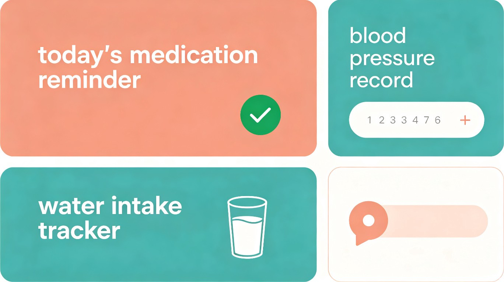
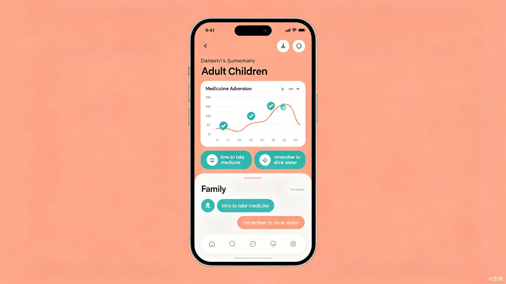

1 创意名称 + 创意介绍
创意名称
亲伴 — 两代人的家庭健康助手
想解决什么问题
很多年轻人忙于工作，和父母不在同一座城市，无法时刻关心老人的身体健康和日常生活。老人常常忘记吃药、喝水，子女打电话追问又怕老人嫌烦。双方都关心彼此，但沟通不够及时、不够高效，子女也不清楚父母真实的健康状况。
为什么会想到做这个
中国老龄化加速，独居或空巢老人越来越多。父母一辈其实愿意记录自己的健康数据，只是不熟悉复杂工具；子女也想尽孝心，但缺少一个简单、自然的桥梁。AI 有能力把这些需求变成一个轻量化的产品，让关爱不再只停留在电话里。
大概是什么产品
一款面向家庭使用的小程序，子女和父母各自拥有独立的操作界面，通过家庭账号绑定在一起。
微信小程序
2 目标用户及痛点
面向哪些用户
子女端
25–45 岁
异地工作、关心父母健康但精力有限的职场人士
父母端
60 岁以上
有基本智能手机使用能力，但不熟悉复杂 App 操作的老人
在什么场景下使用
子女上班间隙打开小程序，查看父母今天的血压记录和吃药打卡情况
父母早上起床，看到子女发来的提醒"该吃降压药了"，点一下确认
老人量完血压后，在简化界面填入数值，子女端自动同步
父母身体不适时，通过内置聊天告诉子女，子女立刻收到通知
当前痛点
沟通效率低
子女每天打多个电话询问饮食、用药，老人觉得被"监视"，子女又担心问不到位
记录不方便
老人记不住吃药时间，也没有趁手的工具来记录血压、血糖等日常健康数据
产品不友好
现有健康管理类产品对老人不友好——界面复杂、操作步骤多、字体小
信息难追溯
微信家庭群里信息杂乱，健康提醒容易被刷走，关键数据事后找不到
3 价值与意义
效率提升
让关心有数据支撑
子女不再需要反复打电话确认父母是否吃药、身体如何——打开小程序一目了然。老人也不必费力回忆和口头描述自己的健康状况，数据自动记录、自动同步。两端的沟通从"低效的追问"变成"有数据支撑的关心"。
4 产品概念展示
以下为产品两端界面的概念设计示意：

👶 父母端 — 大字体、大按钮、简化操作

👨 子女端 — 健康总览、快捷提醒、家庭聊天